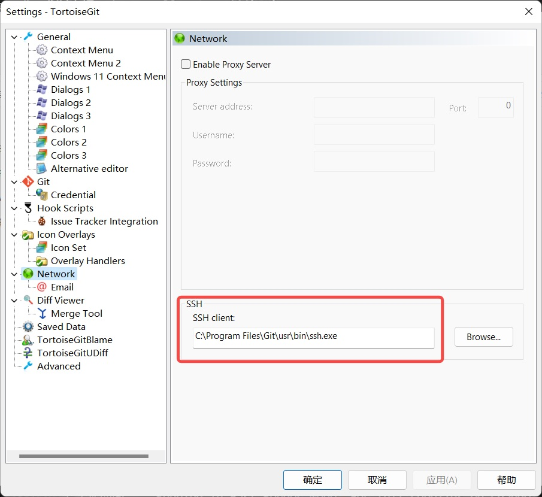

一、设置本地git的账户邮箱和用户名
-
查看是否设置了邮箱和用户名
git config user.name git config user.email -
设置邮箱和用户名
git config --global user.name "Git账号" git config --global user.email "Git邮箱"
二、生成 SSH 密钥
在 git bash 中输入命令 ssh-keygen -t rsa -C "你的Git邮箱"，敲三次回车，就会在目录 我的电脑—>C盘—>用户—>你自己的用户 目录下生成 .ssh 文件夹
三、将 SSH 公钥添加到 GitLab 账户
-
在 .ssh 文件夹下，使用记事本打开 id_rsa.pub 公钥文件，复制里面的内容
-
打开 gitlab 网站的 SSH keys，将复制的文本粘贴进去即可
四、TortoiseGit 使用 git SSH 密钥
打开 TortoiseGit setting 指定 SSH client 为 git 的 ssh.exe

参考：